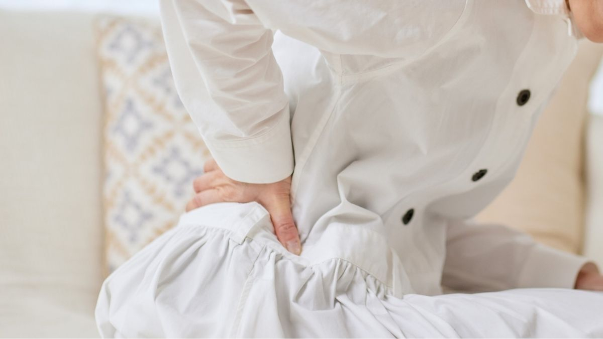
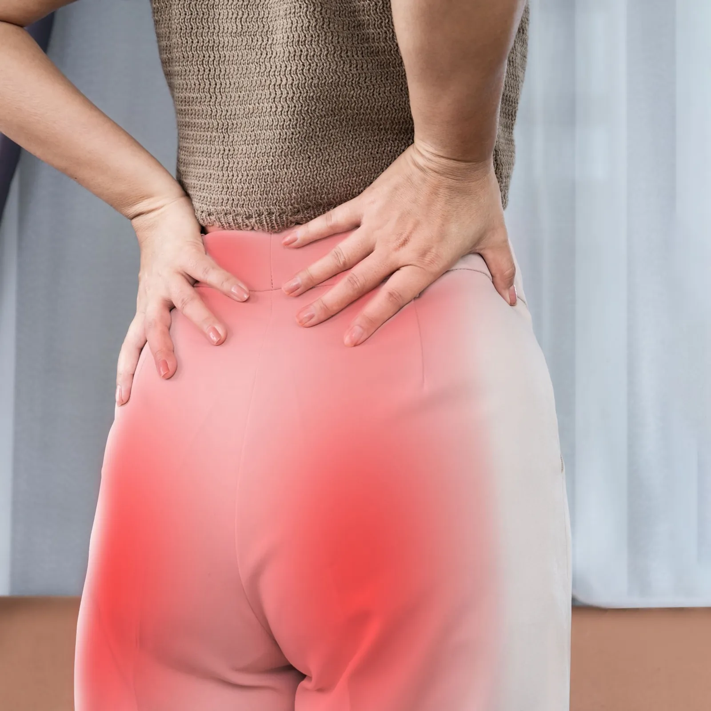
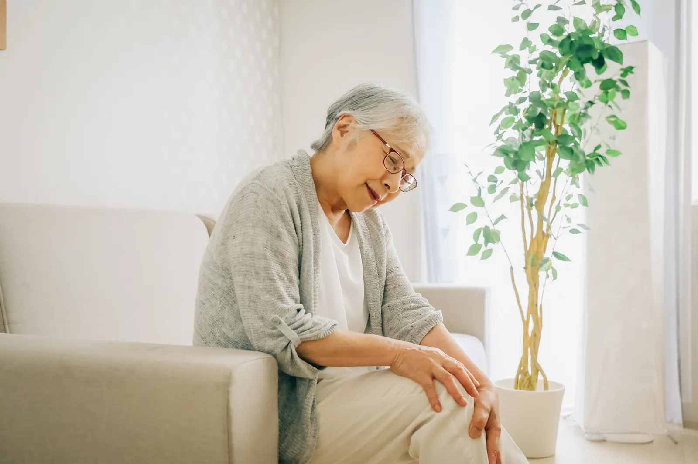
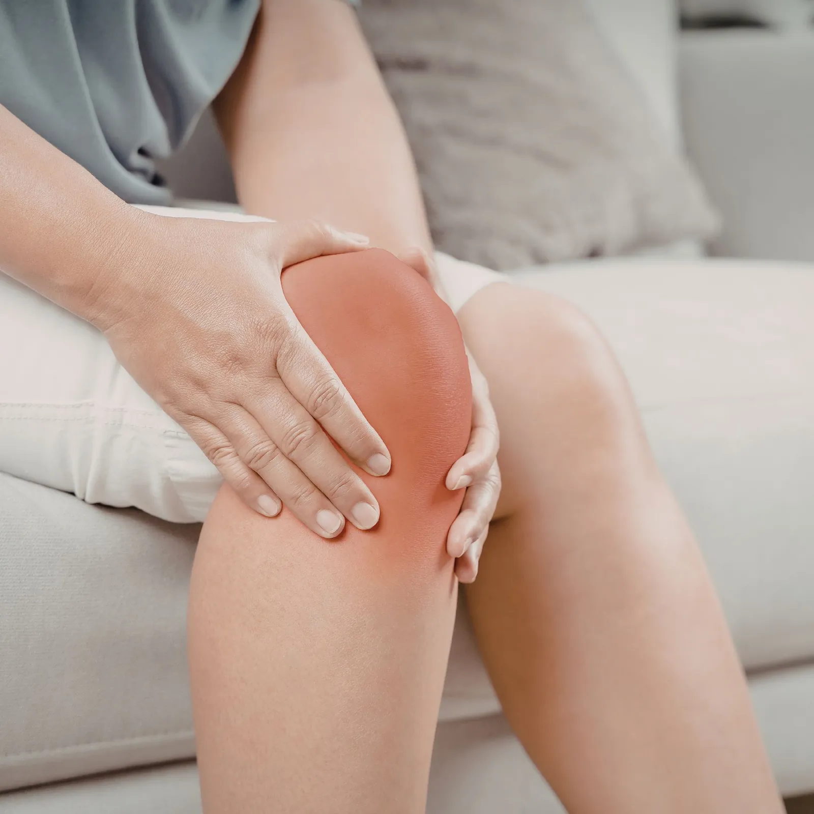
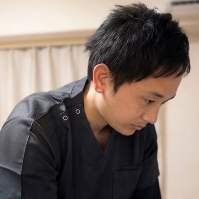

膝痛
階段、歩き始め、正座など、膝の痛みで相談の多いテーマです。
Articles
膝痛を軸にしながら、腰痛や坐骨神経痛、運動療法の考え方へ自然につながる構成にしています。

朝一番の腰痛でお悩みの40代以上の方へ。病院の検査で異常がなくても痛む理由には、背骨の深層筋「多裂筋」の機能低下や脳の過敏なセンサーが関わっていることがあります。千葉県柏市の膝痛・慢性痛専門整体院ひざこぞうが、施術と運動療法で朝の動き出しを楽にする考え方を丁寧に解説します。
記事を読む
腰痛で腰を揉んでも変わりにくい40代以上の方へ。腰は「被害者」であり、原因は股関節の可動域制限にあることがあります。股関節と腰椎の役割分担や大腰筋の重要性をふまえて、整体院ひざこぞうが施術と運動療法で整える考え方を解説します。
記事を読む
お尻から足にかけてのしびれや痛みに悩む40代以上の方へ。坐骨神経痛の原因として注目される梨状筋の役割を、身体の仕組みから丁寧に解説します。画像診断の結果だけに捉われず、姿勢や動きの癖を整えることで、再発しにくい体づくりを目指す考え方をまとめました。
記事を読む
歩き始めや立ち上がりの膝の痛みに悩む40代以上の方へ。膝の変形だけが痛みの原因とは限りません。足首や股関節の動き、脳の痛みへの誤解に着目した施術と運動療法で、階段や散歩を再び楽しめる体づくりを考えます。柏駅西口徒歩8分の整体院ひざこぞうが解説します。
記事を読む階段の上り下りや歩き始めの膝痛にお悩みの方へ。現代人に多いスウェイバック姿勢が膝にどのような負担をかけるのかを、身体の仕組みから整理します。骨の変形だけを原因とせず、姿勢と動きを整えることで再び旅行を楽しめる体を目指す考え方をまとめました。
記事を読む
階段や歩き始めの膝の痛みに悩む40代以上の方へ。膝が外側にねじれてしまう「下腿外旋症候群」の原因と、それが膝痛を招く仕組みを詳しく解説します。骨の形だけでなく、股関節や足首の動き、身体の内側の筋肉に着目した根本ケアで、旅行や散歩を再び楽しめる体を目指しましょう。
記事を読むCategory
階段、歩き始め、正座など、膝の痛みで相談の多いテーマです。
歩き始めや立ち上がりの膝の痛みに悩む40代以上の方へ。膝の変形だけが痛みの原因とは限りません。足首や股関節の動き、脳の痛みへの誤解に着目した施術と運動療法で、階段や散歩を再び楽しめる体づくりを考えます。柏駅西口徒歩8分の整体院ひざこぞうが解説します。
記事を読む階段の上り下りや歩き始めの膝痛にお悩みの方へ。現代人に多いスウェイバック姿勢が膝にどのような負担をかけるのかを、身体の仕組みから整理します。骨の変形だけを原因とせず、姿勢と動きを整えることで再び旅行を楽しめる体を目指す考え方をまとめました。
記事を読む階段や歩き始めの膝の痛みに悩む40代以上の方へ。膝が外側にねじれてしまう「下腿外旋症候群」の原因と、それが膝痛を招く仕組みを詳しく解説します。骨の形だけでなく、股関節や足首の動き、身体の内側の筋肉に着目した根本ケアで、旅行や散歩を再び楽しめる体を目指しましょう。
記事を読む膝は治らないと諦めている方へ。画像所見と痛みの違い、膝以外の負担、筋トレと運動療法の違いを踏まえて、膝の状態がなぜ変わる可能性があるのかを柏市の整体院ひざこぞうが誠実に解説します。
記事を読む膝を揉むだけでは変わらないと感じている方へ。整体院ひざこぞうが施術で必ず確認している7つのポイントを、足の指、足首、股関節、膝のねじれ、ガンバリ筋とサボり筋の関係まで含めてわかりやすく解説します。
記事を読む足の指の小さな筋肉「虫様筋」が、なぜ膝痛や腰痛と関係するのかを解説します。足裏アーチ、地面からの反力、歩き方、体幹の安定まで、整体院ひざこぞうが土台から整える視点をわかりやすくお伝えします。
記事を読む階段の上り下りで膝が気になるときに、痛い場所だけでなく動き方や周りの負担も含めて考えるための整理記事です。
記事を読むCategory
膝をかばう動きや姿勢の乱れともつながりやすい腰の不調を扱います。
朝一番の腰痛でお悩みの40代以上の方へ。病院の検査で異常がなくても痛む理由には、背骨の深層筋「多裂筋」の機能低下や脳の過敏なセンサーが関わっていることがあります。千葉県柏市の膝痛・慢性痛専門整体院ひざこぞうが、施術と運動療法で朝の動き出しを楽にする考え方を丁寧に解説します。
記事を読む
腰痛で腰を揉んでも変わりにくい40代以上の方へ。腰は「被害者」であり、原因は股関節の可動域制限にあることがあります。股関節と腰椎の役割分担や大腰筋の重要性をふまえて、整体院ひざこぞうが施術と運動療法で整える考え方を解説します。
記事を読むお尻から足にかけてのしびれや痛みに悩む40代以上の方へ。坐骨神経痛の原因として注目される梨状筋の役割を、身体の仕組みから丁寧に解説します。画像診断の結果だけに捉われず、姿勢や動きの癖を整えることで、再発しにくい体づくりを目指す考え方をまとめました。
記事を読む
階段の上り下りや歩き始めの膝痛、慢性的な腰痛にお悩みの方へ。実はその不調、股関節の硬さが原因かもしれません。身体の各関節が役割を分担する仕組みや、大腰筋の重要性を詳しく解説。整体院ひざこぞうが、施術と運動療法であなたの動ける喜びをサポートします。
記事を読む膝の痛みをかばううちに腰まで気になってきた方へ向けて、体のつながりと無理のない整え方を整理した記事です。
記事を読むCategory
施術とあわせて、無理のない動きづくりやセルフケアの考え方をまとめます。

筋トレを頑張っているのに膝痛や腰痛が変わらない方へ。筋トレが筋肉というハードウェアを鍛えるのに対し、運動療法は脳が身体を使うソフトウェアを整える考え方です。多裂筋や中臀筋、感覚入力の視点から、整体院ひざこぞうが施術と運動療法の違いをやさしく解説します。
記事を読む運動療法と聞くと不安な方に向けて、整体院ひざこぞうが大切にしている無理のない始め方をまとめた記事です。
記事を読むMSMメソッドとは何かを、患者さん向けにやさしく解説します。膝痛、腰痛、坐骨神経痛に向き合ううえで大切にしている、動きやすさ・支える力・体の使い方という3つの視点をまとめた記事です。
記事を読む